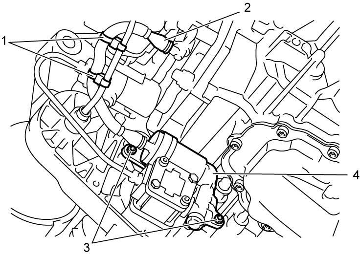
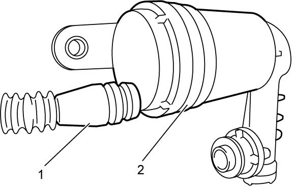
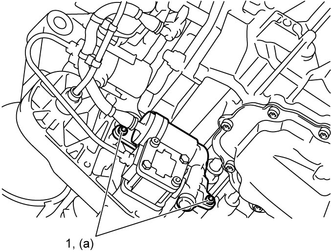

5F
| Hydraulic System Filter Removal and Installation |
Removal
1)Perform “Hydraulic Circuit Depressurization” function under “Utility” mode on SUZUKI scan tool referring Hydraulic Circuit Depressurization Procedure.
2)Disconnect negative (–) cable at battery.
3)Hoist vehicle and remove engine undercover.
4)Disconnect electric motor connector (1).


 "Expand image")
5)Remove hydraulic system filter oil pipe clamps (1).
6)Disconnect hydraulic system filter oil pipe (2) from solenoid valve unit.
7)Remove hydraulic system filter bolts (3) and remove hydraulic system filter (4).

 "Expand image")
8)Remove hydraulic system filter oil pipe (1) from hydraulic system filter (2).

 "Expand image")
Installation
Reverse removal procedure noting the following points.
•Use new hydraulic system filter oil pipe.
•Fix hydraulic system filter oil pipe with new clamps securely.
•Tighten hydraulic system filter bolts (1) to specified torque.
•After replacing hydraulic system filter, perform TCM and Clutch Initialization.
•Fix hydraulic system filter oil pipe with new clamps securely.
•Tighten hydraulic system filter bolts (1) to specified torque.

 "Expand image")